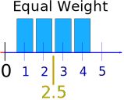
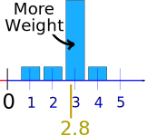
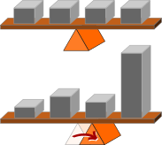
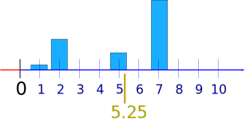

Weighted Mean
Also called Weighted Average
A mean where some values contribute more than others.
Mean
When we do a simple mean (or average), we give equal weight to each number.
Here is the mean of 1, 2, 3 and 4:

Add up the numbers, divide by how many numbers:
Mean = 1 + 2 + 3 + 44 = 104 = 2.5
Weights
We could think that each of those numbers has a "weight" of ¼ (because there are 4 numbers):
Mean = ¼ × 1 + ¼ × 2 + ¼ × 3 + ¼ × 4
= 0.25 + 0.5 + 0.75 + 1 = 2.5
Same answer.
Now let's change the weight of 3 to 0.7, and the weights of the other numbers to 0.1 so the total of the weights is still 1:

Mean = 0.1 × 1 + 0.1 × 2 + 0.7 × 3 + 0.1 × 4
= 0.1 + 0.2 + 2.1 + 0.4 = 2.8
This weighted mean is now a little higher ("pulled" there by the weight of 3).
|
When some values get more weight than others, |
 |
Decisions
Weighted means can help with decisions where some things are more important than others:
Example: Sam wants to buy a new camera, and decides on the following rating system:
- Image Quality 50%
- Battery Life 30%
- Zoom Range 20%
The Sonu camera gets 8 (out of 10) for Image Quality, 6 for Battery Life and 7 for Zoom Range
The Conan camera gets 9 for Image Quality, 4 for Battery Life and 6 for Zoom Range
Which camera is best?
Sonu: 0.5 × 8 + 0.3 × 6 + 0.2 × 7 = 4 + 1.8 + 1.4 = 7.2
Conan: 0.5 × 9 + 0.3 × 4 + 0.2 × 6 = 4.5 + 1.2 + 1.2 = 6.9
Sam decides to buy the Sonu.
What if the Weights Don't Add to 1?
When the weights don't add to 1, divide by the sum of weights.
Example: Alex usually eats lunch 7 times a week, but some weeks only gets 1, 2, or 5 lunches.
Alex had lunch:
- on 2 weeks: only one lunch for the whole week
- on 14 weeks: 2 lunches each week
- on 8 weeks: 5 lunches each week
- on 32 weeks: 7 lunches each week
What is the mean number of lunches Alex has each week?
Use "Weeks" as the weighting:
Weeks × Lunches = 2 × 1 + 14 × 2 + 8 × 5 + 32 × 7
= 2 + 28 + 40 + 224 = 294
Also add up the weeks:
Weeks = 2 + 14 + 8 + 32 = 56
Divide total lunches by total weeks:
Mean = 29456 = 5.25
It looks like this:

But it is often better to use a table to make sure you have all the numbers correct:
Example (continued):
Let's use:
- w for the number of weeks (the weight)
- x for lunches (the value we want the mean of)
Multiply w by x, sum up w and sum up wx:
| Weight w |
Lunches x |
wx |
|---|---|---|
| 2 | 1 | 2 |
| 14 | 2 | 28 |
| 8 | 5 | 40 |
| 32 | 7 | 224 |
| Σw = 56 | Σwx = 294 |
The symbol Σ (Sigma) means "Sum Up"
Divide Σwx by Σw:
Mean = 29456 = 5.25
(Same answer as before.)
And that leads us to our formula:
Weighted Mean = ΣwxΣw
In other words: multiply each weight w by its matching value x, sum that all up, and divide by the sum of weights.
Summary
- Weighted Mean: A mean where some values contribute more than others.
- When the weights add to 1: just multiply each weight by the matching value and sum it all up
- Otherwise, multiply each weight w by its matching value x, sum that all up, and divide by the sum of weights:
Weighted Mean = ΣwxΣw